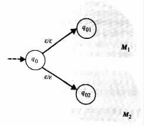
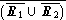
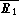
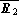
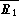
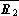
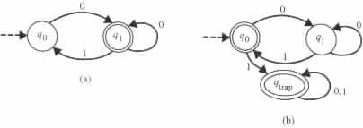

A helpful approach in simplifying the task of programming is to divide the given problem into subproblems, design subprograms to solve the subproblems, and then combine the subprograms into a program that solves the original problem. To allow for a similar approach in designing finite-state transducers (and finite-memory programs), it is useful to determine those operations that preserve the set of relations that are computable by finite-state transducers. Such knowledge can then be used in deciding how to decompose given problems to simpler subproblems, as well as in preparing tools for automating the combining of subprograms into programs.
In general, a set is said to be closed under a particular operation if each application of the operation on elements of the set results in an element of the set.
Example 2.5.1
The set of natural numbers is closed under addition, but it is not closed under subtraction.
The set of integers is closed under addition and subtraction, but not under division. The set
{ S | S is a set of five or more integers } is closed under union, but not under
intersection or complementation. The set { S | S is a set of at most five integer
numbers } is closed under intersection, but not under union or complementation.
The first theorem in this section is concerned with closure under the operation of union.
Theorem 2.5.1 The class of relations computable by finite-state transducers is closed under union.
Proof Consider any two finite-state transducers M1 = <Q1, S1, D1, d1, q01, F1> and M2 = <Q2, S2, D2, d2, q02, F2>. With no loss of generality assume that the sets q1 and q2 of states are mutually disjoint, and that neither of them contains q0.
Let M3 be the finite-state transducer <Q3, S3, D3, d3, q0, F3>, where Q3 = Q1 È Q2 È {q0}, S3 = S1 È S2, d3 = d1 È d2 È {(q0, e, q01, e), (q0, e, q02, e)}, and F3 = F1 È F2 (see Figure 2.5.1).
|

|
Intuitively, M3 is a finite-state transducer that at the start of each computation nondeterministically chooses to trace either a computation of M1 or a computation of M2.
By construction, R(M3) = R(M1) È R(M2).
Besides their usefulness in simplifying the task of programming, closure properties can also be used to identify relations that cannot be computed by finite-state transducers.
Example 2.5.2
The union of the languages L1 = {e} and L2 = { 0i1i | i ³ 1 } is equal to the language
L3 = { 0i1i | i ³ 0 }. By Theorem 2.5.1 the union L3 = L1 È L2 of L1 and L2 is a regular
language if L1 and L2 are regular languages. Since L1 = {e} is a regular language, it
follows that L3 is a regular language if L2 is a regular language. However, by
Example 2.4.2 the language L3 = { 0i1i | i ³ 0 } is not regular. Consequently, is also
L2 = { 0i1i | i ³ 1 } not regular.
The relations R1 = { (0i1j, ci) | i, j ³ 1 } and R2 = { (0i1j, cj) | i, j ³ 1 } are computable by deterministic finite-state transducers. The pair (0i1j, ck) is in R1 if and only if k = i, and it is in R2 if and only if k = j. The intersection R1 Ç R2 contains all the pairs (0i1j, ck) that satisfy k = i = j, that is, R1 Ç R2 is the relation { (0n1n, cn) | n ³ 1 }.
If R1 Ç R2 is computable by a finite-state transducer then the language { 0n1n | n ³ 1 } must be regular. However, by Example 2.4.2 the language is not regular. Therefore, the class of the relations that are computable by finite-state transducers is not closed under intersection.
The class of the relations computable by the finite-state transducers is also not closed under complementation. An assumption to the contrary would imply that the nonregular language R1 Ç R2 is regular, because by DeMorgan's law R1 Ç R2 = . That is, an assumed closure under complementation would imply that  and  are computable by finite-state transducers. Theorem 2.5.1 would then imply that the union  È  is computable by finite-state transducers. Finally, another application of the assumption would imply that = Ç is also computable by a finite-state transducer.
The choice of R1 and R2 also implies the nonclosure, under intersection, of the class of relations computable by deterministic finite-state transducers. The nonclosure under union and complementation, of the class of relations computable by deterministic finite-state transducers, is implied by the choice of the relations {(1, 1)} and {(1, 11)}.
For regular languages the following theorem holds.
Theorem 2.5.2 Regular languages are closed under union , intersection, and complementation.
Proof By DeMorgan's law and the closure of regular languages under union (see Theorem 2.5.1), it is sufficient to show that regular languages are closed under complementation.
For the purpose of this proof consider any finite-state automaton M = <Q, S, d, q0, F>. By Theorem 2.3.1 it can be assumed that M is deterministic, and contains no e transition rules.
Let Meof be M with a newly added, nonaccepting "trap" state, say, qtrap and the following newly added transition rules.
The complementation of the language L(M) is accepted by the finite-state automaton Mcomplement that is obtained from Meof by interchanging the roles of the accepting and nonaccepting states.
For each given input a1 · · · an the finite-state automaton Mcomplement has a unique
path that consumes a1 · · · an until its end. The path corresponds to the sequence of moves
that Meof takes on such an input. Therefore, Mcomplement reaches an accepting state on a
given input if and only if Meof does not reach an accepting state on the the input.
Example 2.5.3 Let M be the finite-state automaton whose transition diagram is given in Figure 2.5.2(a).
|

|
Without the trap state qtrap, neither M nor Mcomplement would be able to accept the input 011, because none of them would be able to consume the whole input.
Without the requirement that the algorithm has to be applied only on deterministic
finite-state automata, Mcomplement could end up accepting an input that M also accepts.
For instance, by adding the transition rule (q1, 1, q1) to M and Mcomplement, on input 01
each of the finite-state automata can end up either in state q0 or in state q1. In such a case,
M would accept 01 because it can reach state q1, and Mcomplement would accept 01
because it can reach state q0.